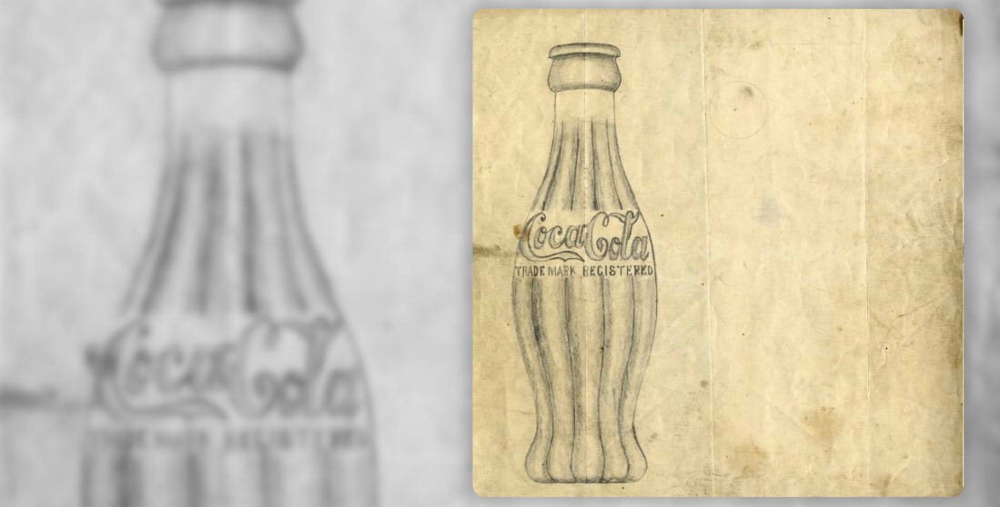

톡 쏘는 짜릿한 맛이 미각으로 기억되는 코카-콜라라면, 시각적인 기억으로 머릿속에 선명한 이미지로 떠오르는 건 독특한 모양의 병과 함께 코카-콜라 특유의 ‘빨간색’이라고 할 수 있다. 수백 가지의 음료들이 진열된 상점이나 대형 마트에서 늘 코카-콜라가 한 눈에 들어오는 이유 중 하나도 바로 이 강렬함을 품은 컬러 때문인지도 모른다. 빨간색이 어떻게 코카-콜라를 상징하는 컬러가 되고, 사람들의 머리와 기억 깊숙한 곳에 자리 잡을 수 있었을까? 그 비밀은 바로 130여 년의 역사를 담고 있는 코카-콜라 기록 보관소에서 찾을 수 있다.
1915년 처음 탄생한 코카-콜라 병은 이제 100세를 훌쩍 넘긴 나이가 되었지만, 특유의 독창적인 디자인으로 단순한 음료수 병을 넘어 예술, 음악, 광고에 영감을 주며 대중문화의 아이콘이 되어왔다. 팝 아트의 선구자 앤디 워홀(Andy Warhol)이 그의 그림에 코카-콜라 병을 그려 넣었고, 폭스바겐은 자동차 비틀(Beetle)의 디자인을 매력적으로 어필하기 위해 코카-콜라 병을 광고에 활용하기도 했다. 전 세계 남녀노소를 불문하고 누구나 알아보는 코카-콜라 병. 그 시작은 뜻밖에도 경쟁업체의 모방으로부터 브랜드를 보호하기 위해 시작됐다.
공모전에 우승한 팀은 미국 인디애나 주에 위치한 루트 유리공장(The Root Glass Company)의 디자이너였던 알렉산더 사무엘슨(Alexander Samuelson)과 얼 딘(Earl Dean) 등 5명의 직원들이었다. 이들은 도서관에서 자료조사를 하다 우연히 발견한 ‘코코아 열매’를 모티브로 코코아 열매의 길게 늘어진 볼록한 곡선 모양과 겉면의 흐르는 듯한 세로 선을 디자인에 표현했다. 1915년 11월 16일 코카-콜라 병은 디자인 특허를 받았고, 이듬해 1916년에는 코카-콜라의 공식 디자인 병으로 지정되었다. 엷은 녹색의 독특한 병 색깔은 숲이 많고 푸르른 코카-콜라의 고향, 조지아 주에 대한 존경심을 담아 ‘조지아 그린(Georgia Green)’이라 이름 붙였다.
코카-콜라 디자인과 제작 방식은 수십 년에 걸쳐 소비자들에게 즐거움을 선사했다. 당시 코카-콜라 병 바닥에는 병을 주문한 도시의 이름이 새겨졌는데, 아이들은 누구의 병이 더 멀리서 온 것인지 앞다투어 비교하곤 했다. 하지만 이러한 인기에도 불구하고 비용 부담 때문에 쉽게 바꾸지 못하다가, 1920년 즈음에 이르러서야 대다수 보틀링 파트너들이 공식 디자인으로 지정된 코카-콜라 병을 생산하게 된다. 코카-콜라는 병 디자인에 대한 독점적 지위를 유지하기 위해 지속적으로 특허권도 갱신했다. 특히 모든 특허가 만료되는 1951년 이후를 대비하기 위해 특허청에 상표권으로 보호해달라는 요청을 제출했다. 이제 코카-콜라 병의 독창적인 곡선과 디자인은 그 자체로 코카-콜라를 상징하기 때문이었다. 실제 당시 한 조사에 따르면 코카-콜라 병 모양을 구분하지 못하는 미국인은 1%도 되지 않는 것으로 나타났다. 덕분에 코카-콜라 병은 1961년, 상업용 포장 용기로는 드물게 특유의 독창성을 인정받아 상표로서 공식적인 보호를 받게 되었다.
